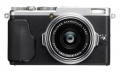
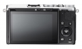
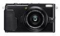
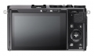

器材库 > 不可换镜头数码相机 > X70

规格总览
发布日期
2016-01-15
影像规格
影像传感器
X-Trans CMOS II
影像传感器尺寸
23.6×15.6mm
总像素
1670万
有效像素
1630万
影像处理器
EXR Processor II
静态图像格式
JPEG, RAW, RAW+JPEG
静态图像尺寸
L: (3:2)4896x3264 (16:9)4896x2760 (1:1)3264x3264M: (3:2)3456x2304 (16:9)3456x1944 (1:1)2304x2304S: (3:2)2496x1664 (16:9)2496x1408 (1:1)1664x1664移动全景拍摄180°: 垂直2160x9600 水平9600x1440120°: 垂直2160x6400 水平6400x1440
画幅比
3:2, 16:9, 1:1
短片格式
MOV
短片尺寸
Full HD 1920 x 1080 60p / 50p / 30p / 25p / 24p，连续拍摄：最多14分钟HD 1280 x 720 60p / 50p / 30p / 25p / 24p，连续拍摄：最多27分钟
音频格式
线性PCM立体声
镜头和对焦
镜头结构
7片/5组
非球面镜片
2片
焦距
18.5mm
等效35mm画幅焦距
28mm
最大光圈
f/2.8
最近对焦距离
10cm
自动对焦系统
智能高速AF（TTL对比AF/TTL相位检测AF）
对焦模式
单幅AF / 连续AF / MF
AF辅助灯/光
有
手动对焦
支持
曝光控制
测光模式
点测光, 平均测光, 矩阵测光
曝光模式
程序AE/快门速度优先AE/光圈优先AE/手动曝光
快门速度
（电子快门模式）1秒至1/32000秒（P模式）4秒至1/4000秒（所有其它模式）30秒至1/4000秒T门 30秒至1/4000秒B门（最长60分）
曝光补偿
±3EV以1/3EV级调整
自动包围曝光
自动包围式曝光（±1/3EV、±2/3EV、±1EV）胶片模拟包围式曝光（可选任意三种胶片模拟）动态范围包围式曝光（100%、200%、400%）ISO感光度包围式曝光（±2/3 EV、±2/3 EV、±1 EV）白平衡包围式曝光（±1、±2、±3）
ISO感光度
自动（控制可用最高达ISO 6400）相当于ISO 200 - 6400（标准输出感光度）扩展输出感光度：相当于ISO 100、12800、25600和51200
白平衡
自动场景识别自定义/色温选择(K)预设：晴天/阴天/荧光灯（日光）/荧光灯（暖白）/荧光灯（冷白）/白炽灯/潜水
连拍
约8.0倍（JPEG：最多约10幅）约3.0幅/秒（JPEG：最大为存储卡容量）
胶片模拟模式
11种（PROVIA/标准、Velvia/高饱和度、ASTIA/柔和、经典正片、PRO Neg.Hi、PRO Neg.Std、黑白、黑白+黄色滤镜、黑白+红色滤镜、黑白+绿色滤镜、SEPIA）
创意滤镜
玩具相机/微缩景观/流行色彩/高调 /低调/动态色调/柔焦/局部色彩（红色/橙色/黄色/绿色/蓝色/紫色）
闪光灯
内置闪光灯
固定
闪光指数
约5.5（ISO100 m）
闪光涵盖范围
（ISO 1600）约30cm至789.43cm
取景规格
LCD类型
彩色TFT LCD
LCD尺寸
3.0英寸
LCD像素
约104万
视野率
约100%
LCD特性
触摸屏, 翻转屏
文件输入/输出
记录媒介
SD/SDHC, SDXC
数据接口
USB2.0, IEEE 802.11b/g/n
视频/音频接口
HDMI 输出
配件端口
热靴, 快门线
支持打印协议
PictBridge, EXIF Print
电源
电池
NP-95 锂离子电池
续航能力
可拍摄约330幅照片，连续视频拍摄约86分钟（脸部优先设置为关闭）
外观
颜色
银色, 黑色
尺寸
112.5×64.4×44.4mm
重量
仅机身约302g / 包括电池和存储卡约340g
其它
工作温度
0~40℃
工作湿度
10~80%
附件
锂离子电池NP-95，AC电源适配器AC-5VF，插头适配器，肩背带，镜头盖，金属带夹，保护盖 ，带夹安装工具，USB电缆，使用说明书
chencan2019-09-05 00:224.69 分
操作性 4.50功能性 4.50美观性 5.00趣味性 5.00耐用性 4.00性价比 4.50解像力 5.00色彩还原 5.00
江老湖2016-03-03 20:064.38 分
操作性 4.50功能性 4.50美观性 4.50趣味性 5.00耐用性 5.00性价比 3.00解像力 4.50色彩还原 4.00
产品图 / 样片
富士 X70

富士 X70

富士 X70

富士 X70
评测 / 相关文章
该产品暂无存档的评测文章
相关文章
- ［资讯］Imaging Resource辣评相机中的入门神器 （存档）
- ［资讯］28mm正面对抗 理光富士谁是街头霸王 （存档）
- ［试用］口袋里的复古小尤物—小评富士X70 （原站已下线）
- ［试用］富士X70中国航空博物馆全纪录 （原站已下线）
- ［资讯］富士FUJIFILM X70官方样片欣赏 （原站已下线）
- ［资讯］小巧轻便 富士全新FUJIFILM X70相机上市 （原站已下线）